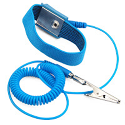
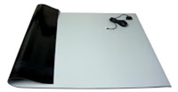

INTRODUCTION
Most tools used in computer system servicing are hand tools. These can be part of a computer repair toolkit as well. In this lesson, you will learn about the common hand tools and equipment that you will be using especially in handling computer equipment such as disassembly/assembly of a computer, as well as repair and maintenance.
When working with electronic equipment, it is important to make sure that there is no static electricity to avoid damage of computer parts.
Static electricity can be easily generated by friction on carpets, clothing, hair, fabric, flooring, etc.
Thus, these tools should be utilized:
- Anti-static wrist wrap
-
Worn to prevent ESD damage to computer hardware.

- Anti-static mat
-
Used to stand on or place tools to prevent buildup of static electricity.
